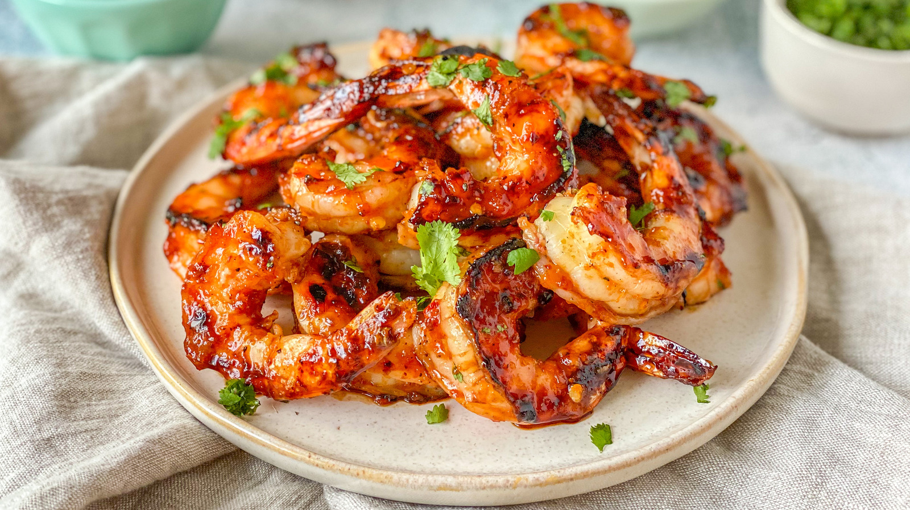

Spicy Grilled Shrimp

Description
This grilled shrimp recipe is fast and easy to prepare and destined to be the hit of any barbeque. And, weather
not permitting, the shrimp cook up great under the broiler, too.
Ingredients
- shrimps
- lemon
- oil
- garlic,salt,paprika,pepper
Directions
- Preheat a grill for medium heat.
- Crush garlic and salt together in a small bowl with a fork. Mix in paprika and cayenne.
Stir in olive oil and lemon juice to form a paste.
- Combine garlic paste and shrimp in a
large bowl and toss until shrimp are evenly coated.
- Lightly oil the grill grate. Grill shrimp until opaque, 2 to 3 minutes per side.
Transfer to a serving dish, garnish with lemon wedges, and serve.